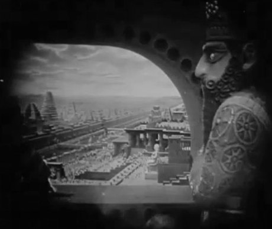

Intolerance, frame at 24:33
D. W. Griffith · 1916 · Silent film, black and white (frame)
Free to use
The Babylon set on the lot on Sunset Boulevard had walls 300 feet tall, and a third of the budget went into the Babylonian scenes. More than 3,000 extras took part, and the payroll for them was reported at 12,000 dollars a day. Griffith shot 300,000 feet of film. The accounts give the cost as 385,906.77 dollars, though it was reported at close to two million. The sets were destroyed two years after they were built.